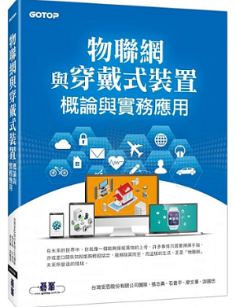
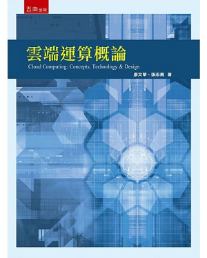
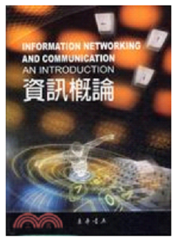

專書一覽

物聯網與穿戴式裝置概論與實務應用
出版日期: 2017/12/19
出版社: 碁峰資訊
作者：
台灣受恩股份有限公司團隊,
張志勇, 石貴平, 廖文華, 游國忠

雲端運算概論
出版日期: 2016/04/01
出版社: 五南
作者： 廖文華, 張志勇
物聯網概論
出版日期: 2013/01/16
出版社: 碁峰資訊
作者：張志勇;翁仲銘;石貴平;
廖文華

資訊概論
(無線網路,網路通訊與生活)
出版日期: 2007/08/01
出版社: 東華書局
作者: 淡江大學資
其他專書(含原文書)
Telematics Communication Technologies and Vehicular Networks: Wireless Architectures and Applications
MAC Protocols in Vehicular Ad Hoc Networks
出版日期: 2010-03-01
出版社: Hershey, Pa. : Information Science Reference
作者: 張志勇
Mobile Intelligence ( Efficient Data-Centric Storage Mechanisms in Wireless Sensor Networks )
出版日期: 2010-01-01
出版社: New Jersey: John Wiley & Sons
作者: 張志勇
Mobile Intelligence ( Tracking in Wireless Sensor Networks )
出版日期: 2010-01-01
出版社: Singapore: John Wiley & Sons
作者: 張志勇
Handbook on Sensor Networks ( Obstacle-Resist Routing Protocols for Wireless Sensor Networks )
出版日期: 2010-01-01
出版社: Hackensack, N.J. : World Scientific
作者: 張志勇
Wireless Ad Hoc Networking: Personal-Area, Local Area, and Sensory-Area Networks
A Smart Blind Alarm Surveillance and Blind Guide Network System on Wireless Optical Communication
出版日期: 2006-01-01
出版社: Boca Raton, FL: Auerbach Publication
作者: 張志勇
廿一世紀全球化科技革命之衝擊 ( 資訊科技之衝擊 )
出版日期: 2005-09-01
出版社: 新北市：淡江大學出版中心
作者: 張志勇